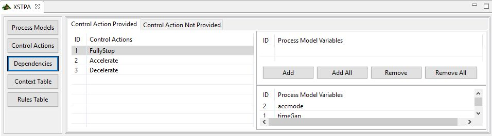

In this View you can link processmodel Variables with Control Actions (only if you marked them as "safety critical" in the control action view). Do this by selecting the control Action and then using the Buttons to add or remove certain processmodel Variables. Please notice that you can change the tab from "provided" to "not provided" and make sure, that you use the right Context for the linked control Actions. If you are finished linking the Variables, you should go forward and generate a new Context Table!
